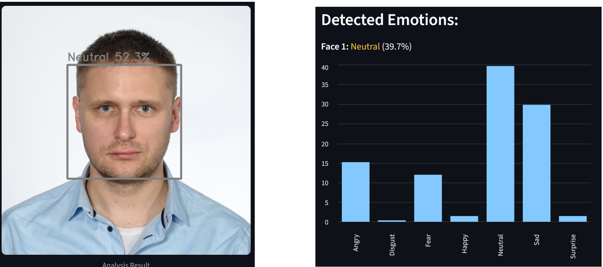

😊 Emotion Recognition System
Facial Emotion Detection with OpenCV, PyTorch & Streamlit
📌 Project Overview
Emotion Recognition System is a deep learning–based web application for automatic facial emotion recognition from images.
The project demonstrates a complete Computer Vision pipeline, covering face detection, CNN-based emotion classification, and interactive result visualization in a web interface.
It was designed as an end-to-end portfolio project, showcasing both machine learning expertise and practical model deployment.

🎯 Features
- 📤 Image upload (JPG / PNG)
- 📸 Test image loaded directly from GitHub
- 👁️ Multiple face detection in a single image
- 🧠 Emotion classification using a CNN
- 📊 Visualization of:
- face bounding boxes
- predicted emotion labels
- confidence scores
- full probability distribution across classes
- ⚡ Fast inference (~50 ms per face)
🧠 Machine Learning Model
- Type: Convolutional Neural Network (CNN)
- Framework: PyTorch
- Dataset: FER-2013
- Number of classes: 7
- Angry
- Disgust
- Fear
- Happy
- Neutral
- Sad
- Surprise
Architecture (summary)
- 4 convolutional blocks: Conv2D → BatchNorm → ReLU → MaxPool → Dropout
- Fully connected classifier
- ~11M trainable parameters
Test accuracy: 59.64%
👁️ Face Detection
- Technology: OpenCV
- Algorithm: Haar Cascade Classifier
The system detects multiple faces per image and performs emotion inference independently for each detected face.
🖥️ Web Application
- Framework: Streamlit
- Key aspects:
- cached model and resources for performance
- session state management
- clean and user-friendly UI (sidebar + columns)
- ready for demo and deployment
🧰 Tech Stack
- Python
- PyTorch – deep learning
- OpenCV – computer vision
- Streamlit – web deployment
- NumPy / PIL
- Git & GitHub
🚀 Use Cases
- Human–Computer Interaction (HCI)
- User behavior analysis
- Emotion-aware feedback systems
- Computer Vision R&D projects
- Machine Learning demos for technical interviews
📂 Repository
🔗 GitHub:
https://github.com/slastrzelec/12_emotion-detection-app
👨💻 Author
Sławomir Strzelec
Data Scientist | Machine Learning Practitioner
- 📍 Kraków, Poland
- 💼 LinkedIn: https://www.linkedin.com/in/sławomir-strzelec
- 💻 GitHub: https://github.com/slastrzelec
📌 Project Status
✅ Completed
🔧 Potential extensions:
- Grad-CAM / model explainability
- video & webcam support
- Dockerized cloud deployment
- higher-performing architectures (ResNet, EfficientNet)